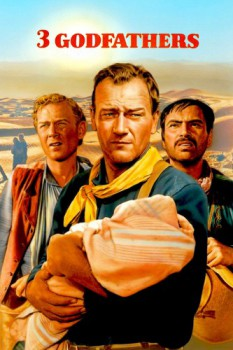

Country:United States, 102 minutes
Spoken languages:Spanish, English
Genres:Western
Director(s):John Ford
Writer(s):Laurence Stallings, Frank S. Nugent, Robert Nathan
Video Codec:Unknown
Number: 5160

Certification:
Storyline:
Three outlaws on the run discover a dying woman and her baby. They swear to bring the infant to safety across the desert, even at the risk of their own lives.
Cast:
John Wayne (as Robert Marmaduke Sangster Hightower), Pedro Armendáriz (as Pedro 'Pete' Roca Fuerte), Harry Carey Jr. (as William Kearney ('The Abilene Kid')), Ward Bond (as Perley 'Buck' Sweet), Mae Marsh (as Mrs. Perley Sweet)
Medium: Media file,
Location: D:\Personal\Sarah Disk\Documents\Curse\Minecraft\Install\assets\virtual\legacy\sounds\dig\sand3.ogg
Loaned: No
Aspect ratio: Unknown